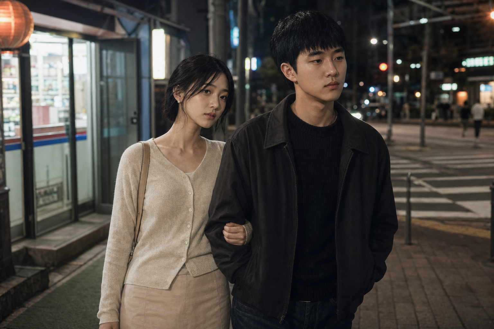

083. 팔짱
소주 두 병이 비고 세 병째가 반쯤 남았을 때, 한서윤의 목소리가 눈에 띄게 낮아져 있었다. 그녀는 젓가락으로 노가리를 뜯다가 아예 내려놓고 턱을 괸 채 용식을 봤다.
[한서윤] "나 진짜 이상하지. 두 달 동안 연락도 뜸했는데, 오늘 얼굴 보니까 아무렇지도 않게 또 이러고 있잖아."
[김용식] "안 이상해요."
[한서윤] "이상해. 나도 알아."
그녀는 웃으며 소주를 한 잔 더 털어 넣었다. 용식은 그 웃음의 끝이 예전보다 조금 더 오래 남는다는 걸 느꼈다.
[김용식] "머리는 왜 자른 거예요, 진짜로."
[한서윤] "그냥. 계속 똑같이 살면 계속 똑같은 일만 생길 것 같아서."
[김용식] "무슨 일이 생기길 바라는데요."
한서윤은 그 질문에는 답하지 않고 잔을 채웠다. 대신 팔짱을 끼고 테이블에 팔꿈치를 올린 채 그를 오래 쳐다봤다. 시선을 피하지 않는 눈이었다.
[한서윤] "너는 일본 가서 뭐가 제일 좋았어."
[김용식] "그냥, 새로운 데니까요."
[한서윤] "거기 사람도 새로웠고?"
용식은 대답 대신 잔을 비웠다. 한서윤은 그 침묵을 놓치지 않고 픽 웃었지만 더 캐묻지는 않았다. 대신 그녀는 종업원을 불러 계산을 부탁했다. 카드를 미리 꺼내 든 용식의 손을 그녀가 손등으로 살짝 눌러 막았다.
[한서윤] "오늘은 내가 낼게. 대신 데려다줘."
자리를 정리하고 나온 건 밤 열 시가 넘어서였다. 술집 밖 공기는 여전히 뜨겁고 습했다. 매미 소리는 잦아들었지만 대신 어디선가 에어컨 실외기 돌아가는 소리가 낮게 깔려 있었다.
한서윤은 비틀거리지도 않았는데 굳이 그의 팔에 손을 얹었다.
[한서윤] "역까지만 좀 붙어서 가자. 사람들 많아서."
거리에는 사람이 그렇게 많지 않았다. 용식도 그걸 알았지만 손을 밀어내지 않았다. 그녀의 손이 팔꿈치 안쪽으로 조금씩 파고들었고, 걸음이 이어질수록 팔짱이라고 불러도 이상하지 않을 만큼 거리가 좁아졌다. 가로등 불빛 아래를 지날 때마다 그녀의 옆얼굴이 밝아지다가 다시 어두워졌다.

[한서윤] "귀걸이 예쁘지."
[김용식] "잘 어울려요."
[한서윤] "그때는 사과라면서 줬잖아. 지금은 그냥 갖고 있는 거야, 이유 없이."
용식은 대답을 고르다가 아무 말도 하지 못했다. 한서윤은 그 침묵을 나쁘게 받아들이지 않는 듯, 오히려 팔에 얹은 손에 힘을 조금 더 줬다. 골목을 벗어나 큰길로 나서자 편의점 불빛이 환하게 쏟아졌다. 한서윤이 그 앞에서 걸음을 멈췄다.
[한서윤] "물 좀 사자. 목 마르다."
편의점 안에서 그녀는 생수 두 병을 집었다. 계산대 앞에서 지갑을 꺼내려는 그녀를 용식이 먼저 카드를 내밀어 막았다. 그녀는 말리지 않고 순순히 지갑을 다시 넣었다. 밖으로 나와 생수를 나눠 마시는 사이, 그녀가 문득 그의 셔츠 깃을 손끝으로 만졌다.
[한서윤] "여기 단추 하나 풀렸어."
셔츠 단추는 풀려 있지 않았다. 용식은 그 사실을 알면서도 아무 말도 하지 않았다. 그녀의 손끝이 잠깐 목 아래에 머물렀다가 천천히 떨어졌다. 두 사람 다 그 손이 왜 거기 닿았는지 굳이 설명하지 않았다.
편의점 앞 파라솔 의자에 잠깐 걸터앉아 물을 마시는 동안, 지나가던 오토바이 배달원이 요란한 경적을 울리며 골목을 빠져나갔다. 그 소리에 한서윤이 살짝 몸을 움츠리며 그의 팔을 붙잡았다가, 소리가 멀어지자 웃으며 손을 놓았다.
[한서윤] "놀랐잖아."
[김용식] "저것 때문에요?"
[한서윤] "몰라, 그냥 반사적으로."
그녀는 그렇게 말하며 생수병 라벨을 손톱으로 긁었다. 라벨이 반쯤 벗겨질 때까지도 그녀는 그를 보지 않았다.
횡단보도 앞에서 신호를 기다리는 동안, 한서윤은 팔짱을 낀 채로 그의 어깨에 머리를 살짝 기댔다. 짧은 순간이었다. 신호가 바뀌자 그녀는 아무 일 없었다는 듯 몸을 세우고 다시 걸음을 옮겼다.
[한서윤] "놀랬어?"
[김용식] "아니요."
[한서윤] "놀랬는데."
그녀는 장난스럽게 웃으며 그의 팔을 한 번 더 세게 당겼다. 육교 아래를 지날 때는 낡은 가로등 하나가 깜빡거리며 두 사람의 그림자를 늘였다 줄였다 했다. 용식은 그 그림자가 겹쳐지는 순간마다 이상하게 걸음이 느려지는 걸 느꼈다. 한서윤은 그런 그의 속도를 알아차린 듯, 일부러 더 천천히 걸었다.
[한서윤] "너 지금 나랑 이렇게 걷는 거, 누구한테 말할 거야?"
[김용식] "..."
[한서윤] "말 안 해도 돼. 나도 안 물어볼게."
역 앞에 도착하자 한서윤은 걸음을 멈추고 그를 정면으로 봤다.
[한서윤] "우리 무슨 사이냐고 묻고 싶은데, 오늘은 안 물을래."
[김용식] "..."
[한서윤] "물으면 네가 뭐라고 답할지 알 것 같아서."
그녀는 그렇게 말하고 먼저 돌아섰다. 몇 걸음 걷다가 다시 돌아보며 손을 살짝 흔들었다. 용식은 그 뒷모습이 개찰구 너머로 사라질 때까지 자리에서 움직이지 않았다. 주머니 속 폴더폰이 다시 짧게 울렸다. 초연이었다.
그는 한참 만에 답장을 적었다.
거짓말은 아니었지만, 그렇다고 온전한 진실도 아니었다. 그는 폴더폰을 닫고 밤하늘을 잠깐 올려다봤다. 별은 잘 보이지 않았고, 대신 가로등 불빛만 뿌옇게 번져 있었다. 집으로 걸어가는 내내 팔꿈치 안쪽에 남은 온기가 쉽게 사라지지 않았다.
방에 들어와 씻고 침대에 누운 뒤에도 그 온기는 가시지 않았다. 그는 천장을 보며 오늘 있었던 일을 하나씩 되짚었다. 팔짱, 어깨에 닿았던 머리, 셔츠 깃을 만진 손끝. 어느 것도 큰 사건은 아니었지만, 전부 합쳐 놓고 보니 예전의 그녀와는 다른 방향으로 가고 있다는 게 분명했다. 예전에는 학원 밖에서는 남처럼 굴자던 사람이었다. 지금은 오히려 밖에서 더 대담해지고 있었다.
그는 협탁 위에 올려 둔 폴더폰을 다시 열었다. 초연과의 대화창을 한 번 읽어 보고, 그 위에 겹쳐지듯 한서윤의 번호를 떠올렸다. 두 이름 사이에서 그는 아무 결정도 내리지 못한 채 폰을 닫았다. 창밖 매미 소리가 다시 들려오기 시작했다. 여름이 아직 끝나지 않았다는 걸 알리듯, 밤이 깊도록 끊이지 않았다. 개강까지 남은 날짜를 세어 보다가, 그는 그 계산이 별 의미가 없다는 걸 깨닫고 눈을 감았다.